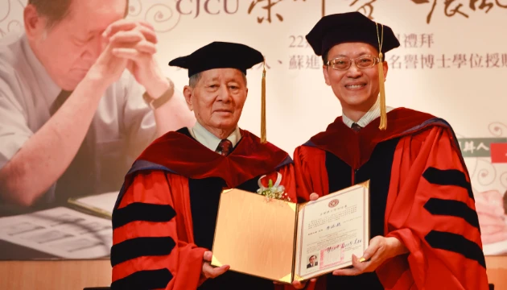

「蘇校長一生的行事風格，可用〈愛的真諦〉（林前十三4~8）這首歌來描述。這是上帝的愛、基督的精神，也是蘇校長給我們的榜樣。」
📌 家庭、求學與早年生涯
1931年9月10日，蘇進安校長出生於高雄湖內公館村（圍仔內）的農家，排行老三，上有兩位哥哥，下有一位弟弟和兩位妹妹。農忙時節，農家小孩即使年紀小也得下田幫忙，小學六年級時，他就曾獨自從田裡趕牛車橫越二層行溪回家。
國小畢業後，他考取長榮中學初中部，當時交通非常不便，從家裡通學前後要花費近兩小時。所幸初中二年級時，大哥在東門路開了一家鋁器廠，他才搬進工廠解決通車之苦，後來並直升長榮中學高中部。
蘇校長在校成績始終名列前茅，尤其數學更獨佔鰲頭，而他最喜歡的體育活動是踢足球。長榮中學是台灣足球的發源地，當時足球熱潮方興未艾，長中代表隊更是全台最強的隊伍。1953年他考取台大經濟系，大學四年鑽研台灣各行各業與社會整體經濟發展的關係，畢業論文是《台灣鋁業與台灣經濟的關係》。原以為畢業後可以一展長才協助家裡鋁器廠的發展，無奈在他退伍後，鋁器廠已經結束營業。
蘇校長於1957年結婚，婚後轉往教育事業發展。1958年任教於台中新民商職，一年後轉任台南學甲天仁商工，八年期間擔任教師兼任總務主任。1967年曾獲日本早稻田大學碩士班入學許可，但因工作繁忙而放棄赴日進修；同年轉任淡水工商專科學校，六年間曾擔任校長室秘書及總務主任，最後擔任教務主任，並於淡專任教期間，1971年取得教育部審核通過的副教授資格。
📌 初任長中校長：臨危受命，百廢待舉
1973年2月，長榮中學戴明福校長申請退休，蘇校長在校友高育仁先生推薦下，回到母校服務。同一時間，遠東工專也希望聘請蘇校長擔任校長，幾經考慮，蘇校長決定接受長榮中學禮聘，成為長榮中學第七任校長。
也許是校友的責任心或使命感驅使，以當時的環境來看，蘇校長選擇了一條崎嶇困難的道路。當時長榮中學的狀況極為困難，正面臨兩個難題：
- 招生危機：初中部因招不到學生，已停招兩年，只剩下初三的 23 位學生，其中 19 位是足球選手（由校友楊豐明先生贊助，從勝利國小與佳里國小足球隊招來的，後來這群選手全數當選國家代表隊），而另外 4 位則是喜愛足球的球迷，因此如何恢復初中部的招生是很大的課題。
- 財務與校園荒廢：全校只剩下 700 位學生，學校經費入不副出，教職員工薪水面臨斷炊，偌大的校園（約八甲地）大多荒廢，可說是百廢待舉。
面對困境，蘇校長總是沉穩以對。記得第一次校務會議時，蘇校長對全體教職員工說：「我們就像一群看熱鬧的觀眾，已經晚到了，現在站在人家後面。我們必須踮起腳尖才能看得見，大家要辛苦一陣子了！」
為了恢復初中部招生，蘇校長自3月起便開始密集拜會各國小校長、主任。拜會過程中，固然有的校長、主任熱烈歡迎，誠懇招待；但大部分都是虛應故事，敷衍應付，因為大家都不看好長中。記憶中，市區某一國小的教務主任是長中的校友，竟還對蘇校長大潑冷水，勸蘇校長還是回到淡水工商專科學校，因為長榮中學注定早晚得關門。但蘇校長從來不氣餒，他認為不可能所有人都認同你的做法，既然決定了，就只有勇往直前。
📌 復興長榮中學：免費輔導課與籌措財源
5月起，蘇校長要全校老師到各國小及教會發傳單，內容是長榮中學要在暑假期間，舉辦小學應屆畢業生為期六週的免費英文、數學輔導課；學校方面也積極準備，果然6月底就迎來各國小畢業生共 268 位報名參加課程。學校免費編印講義，認真教學；有請假不能來上課者，除通知家長外，並由老師把當天講義送到家裡。此作法感動很多家長，六週輔導課結束後，終於有 57 位同學決定留下來就讀長榮中學。暑期免費輔導連續做了三年，初中部也因而復活，不斷增班，最多曾達到每學年 16 班，盛極一時。
另一個難題是如何籌措財源，解決財政和重整校園的問題。蘇校長展開向校友募捐，透過校友介紹，確實找到不少熱心校友慷慨捐輸；但募得的款項雖不無小補，究竟是杯水車薪。於是蘇校長大膽向校友大戶借款，透過校友謝榮宗介紹，找到他的同班同學鄧秋松校友。鄧秋松後來介紹蘇校長向銀行借貸，並由自己當保證人，甚至支付利息。感謝上帝安排這麼慷慨的校友，解決了當時的財務困境。
經過三年辛苦經營，初中部恢復招生，深得社會各界普遍肯定；高中、高職部學生也漸多，學校財務終於獲得改善，校園環境也得到整理。蘇校長開始改換學生制服：男生改成深藍長褲、水藍色上衣，配戴藍色領帶；女生則是藍色花格裙，搭配水藍色上衣，領口別上藍色花格蝴蝶結，布鞋也改換為皮鞋。學生們穿著新制服，顯得活潑且朝氣蓬勃。而學生數日漸增加，各大樓也陸續興建，整個學校煥然一新；並且為了方便學生通學，增設各路校車，南從岡山、路竹，北到麻豆、佳里，東到關廟、歸仁及仁德。此外，校刊《長中青年》改名為《母校長中》並擴大發行，普及校友，讓校友也能即時知道學校的訊息。
當學校逐漸壯大，初中、高中、高職學生漸多，蘇校長又提出一個理論——分科經營。他說：日本新幹線之所以速度那麼快，是因為每個車廂都有動力，單獨車廂都可以跑。所以學校各科都應該適度的獨立，給予科主任適度的權力，各自發展，彼此協助也彼此競爭，因而校務顯得生氣蓬勃，蒸蒸日上。
📌 創辦長榮大學，榮任長榮學園長
學校一切穩定就緒後，蘇校長重思進修的念頭，遂於1980年進入日本西南大學碩士班進修，1983年取得碩士學位，同年4月再進入該校博士班，於1986年3月修完博士課程，又繼續博士後研究進修一年。在這段進修期間，他都是每年9月台灣開學，10月初就到日本學習，直到聖誕節前後再返台；下學期台灣2月開學，他3月初赴日，等到6月初返台主持畢業典禮，往返奔波，相當辛苦。也就在這段進修期間，他協助學校結交兩個姊妹學校——韓國光州東岡學園高校及日本關東學院附設高校；這兩所學校都是從國小、中學辦到大學，因此蘇校長開始萌生辦理長榮大學的想法。
1985年，時值長榮中學創校一百週年，教育部解除創設大學的禁令，這個訊息給與董事會與校友會很大的鼓勵。於是蘇校長與黃仁村董事長召集董事會與校友會成員，如王金河醫師、黃德成牧師，開始商議如何籌設長榮大學。首先，成立長榮大學籌備處，組成籌備委員會，但在積極覓地之後，最後決議大潭村農地。位置找到了，土地找好了，但錢在哪裡？開會中，大家迫切禱告，上帝開了一扇門。透過長中校長室的龔詩雄秘書與他的女婿許春華（時任奇美公司總務經理，現任董事長）的牽線，與奇美許文龍董事長見面談創辦大學之事。
許董事長明白長榮大學是要延續長榮中學、以傳教為目標的基督教大學後，表示：「你們可以繼續創校，1億2000萬我無息借予你們半年。」 後來再展期半年，付給奇美利息。禱告中，上帝又開啟一扇窗——幾年前校友蘇南成當市長時，開闢了四十米寬的林森路將長榮中學校園一分為二。學校向教育部申請核准後將該塊土地賣給皇龍建設，共賣得 1 億 9400 萬元；當中 1 億 2000 萬向長榮大學籌備會購地十二甲，剩餘 7000 多萬興建長榮中學第三教學大樓。長榮大學籌備會實際上不付分文就取得四十甲校地，順利還款給奇美。
緊接著要籌建校舍，上帝安排了財力雄厚的蘇寶山先生，同意先建後分期付款，開始興建第一教學大樓與第一宿舍大樓。1989年6月6日獲准籌備長榮工學院，後於1992年11月改為長榮管理學院，1993年9月正式招收首屆新生。1994年在長榮中學校內創設長榮幼稚園與國小安親班[cite: 2]。1999年2月蘇校長榮任長榮管理學院、長榮中學及長榮幼稚園董事會通過之「長榮學園學園長」，此時整個學園人數已達 1 萬 6000 名，學園長頭銜實至名歸。

▲ 蘇進安校長獲頒長榮大學名譽博士學位
📌 愛的領導與人格特質
綜觀30年來，長榮中學的復興、長榮大學的創辦與長榮學園的設立，每一件事情都充滿上帝的恩典與蘇校長的睿智。蔡忠雄前校長總結蘇校長的人格特質：
- 遇到困難，永不退卻：拜訪國小被潑冷水、勸考上第一志願同學回校被拒、募款借款等挫折，他從不退縮（如以賽亞書四十31「但那等候耶和華的必重新得力」）。
- 高瞻遠矚，超前部署：開辦各線校車、更新高中部理化實驗室、引進打字機與電機資訊科設備，並改革制服讓學生以就讀長榮為榮。
- 以信仰、愛心領導部屬：以鼓勵代替責備；每年暑假舉辦全校同仁靈修會；新年團拜發紅包給員工幼童眷屬；設立長榮禮拜堂並每週主日親自參與兩場禮拜。
蘇校長於2023年8月9日安息主懷，享耆壽92歲，留給我們無限懷念。「那美好的仗我已經打過了，當跑的路我已經跑盡了，所信的道我已經守住了。」 相信上帝已接納蘇校長的靈魂在祂愛的國度裡，也必為他預備公義的冠冕。